TransLit-Lab user manual
Welcome to TransLit-Lab
TransLit-Lab is a WordPress plugin for testing and shaping the CompLing-AI transliteration engine, which turns Roman letters into Bengali–Assamese script (BPM) and back. The engine exists twice, as JavaScript that runs in the browser and as PHP that runs on the server, and the lab runs them side by side so you can see that both give the same result. Its add-on, TransLit-Lab Parity, tests the two engines against each other on thousands of inputs and packs your finished rules into ready-to-use libraries.
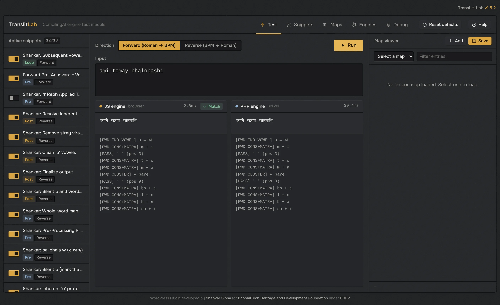
What you can do with it
Test both engines
Type a word or a passage and see the browser and server engines’ output and logs side by side.
⇄Edit the maps
Change which Roman letters give which BPM characters, and back, section by section.
✂Write rules
Snippets handle what a plain table can’t: conjuncts, the silent o, whole words, clean-up.
👤Work as a team
Give language experts their own lab access, limited to the tabs they need.
↺Undo anything
Every change is kept as a revision with who made it; restore any of them, or a full backup.
✓Prove parity, ship it
The Parity add-on tests the two engines on thousands of inputs and builds four libraries from your data.
Two plugins, one manual
| Plugin | Where you find it | Who uses it |
|---|---|---|
| TransLit-Lab 1.5.1 | On any page where you put the [translitlab] shortcode, and in Settings → TranslitLab. | Administrators, and the language experts you approve (users with the Transliterator role). |
| TransLit-Lab Parity 1.1.0 | Tools → TransLit-Lab Parity in the WordPress dashboard. | Administrators only. Needs TransLit-Lab to be active. |
A few words used in this manual
- Forward / Reverse
- Forward turns Roman letters into BPM (
ami→ আমি). Reverse turns BPM into Roman letters (আমি →ami). Each direction has its own map and its own snippets. - BPM
- The engine’s name for its output script: the Bengali–Assamese (Eastern Nagari) script, as Unicode text.
- Map
- The table of what turns into what, divided into sections: consonants, vowel signs (matras), independent vowels, digits, punctuation and special signs.
- Snippet
- A small rule that runs before, during or after the map lookup, for anything the table alone can’t do. Each snippet has a JavaScript body for the browser engine and a PHP body (JSON rules) for the server engine.
- Parity
- The two engines giving exactly the same output for the same input. It matters because whatever you build will run in both places: in a web page or app, and on a website’s server.
Try the engine here
This box runs the JavaScript engine built from the lab’s data, the same files the Parity add-on produces (Building packages). Type in either direction; open the log to see each step.
Step-by-step log
dist files into the manual (see the README in this folder); the box and the map table follow automatically.Getting started
Installing and setting up
Install both plugins, put the lab on a page, and decide who may use it. This takes a few minutes and is done once, by a site administrator.
What you need
- WordPress 6.0 or newer.
- PHP 8.0 or newer with
mbstring. Theintlextension is recommended (it lets the PHP engine normalise text the way the browser does). Most hosts have both switched on. - For using the lab: a desktop or laptop computer with a browser window at least 1024 pixels wide. Phones and tablets are shown a message instead.
Installing
- Upload TransLit-Lab. In the dashboard go to Plugins → Add New Plugin → Upload Plugin, choose
translitlab-v1.5.1.zip, click Install Now, then Activate. - Upload TransLit-Lab Parity the same way, from
translitlab-parity-v1.1.0.zip, and activate it. It needs TransLit-Lab: WordPress 6.5 and later won’t activate it without TransLit-Lab, and on older versions it shows a notice instead of its page. - Check what activation did. TransLit-Lab creates its database tables and fills them with the bundled maps, snippets and engine settings (only if they are empty, so reinstalling never overwrites your work). If the site has no Transliterator role yet, it creates a basic one; an existing role is left as it is.
Putting the lab on a page
- Create a page (for example “Transliteration Lab”) and add a Shortcode block containing
[translitlab]. - Publish it. The lab draws its own frame, with the name, version and a credit line, and spreads across the full width of the browser window whatever the theme’s content width. Don’t wrap the shortcode in a box or column of your own.
- Open the page while logged in as an administrator. You see the whole lab, with all five tabs.
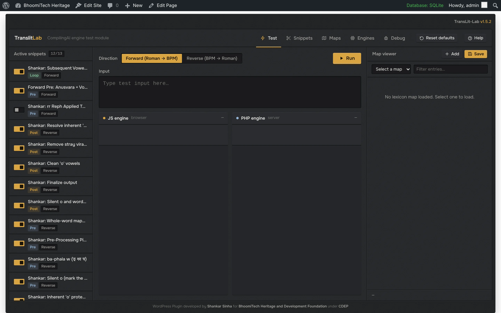
Shortcode options
| Shortcode | What it does |
|---|---|
[translitlab] | The lab, in the site-wide theme and height from Settings. |
[translitlab theme="light"][translitlab theme="dark"] | Use the Light (stone) or Dark (graphite) look on this page only. |
[translitlab height="900"] | Make the lab exactly 900 pixels tall on this page (480 to 3000); each panel scrolls inside it. |
[translitlab height="auto"] | Fill the browser window on this page, whatever the site setting. |
The options can be combined: [translitlab theme="light" height="820"].
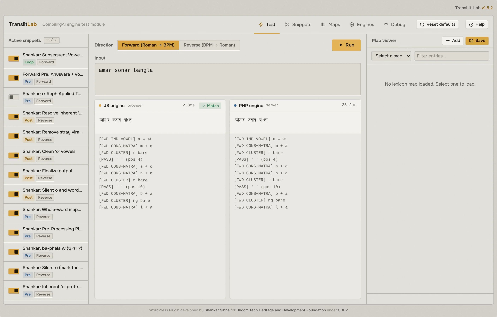
Next steps
- Give your language experts access: People and access.
- Learn your way round the lab: A tour of the lab.
- Download a full backup before the first big change.
Getting started
People and access
Administrators always have the whole lab. Anyone else needs two things: the site’s Transliterator role, and lab access approved in Settings → TranslitLab. You also choose which tabs each of them sees.
Who sees what
| Person | What the lab page shows |
|---|---|
| Not logged in | Log in to continue, with a Log in button that returns to the page afterwards. |
| Logged in, without access | No access yet: ask a site administrator. |
| Approved, but every tab switched off | No tabs enabled. |
| On a phone, a tablet, or a window narrower than 1024 px | Please use a computer. On a computer, widening the window brings the lab back. |
| Transliterator with lab access | The lab, with the tabs given to them. |
| Administrator | The whole lab, every tab, plus the administrator-only features below. |
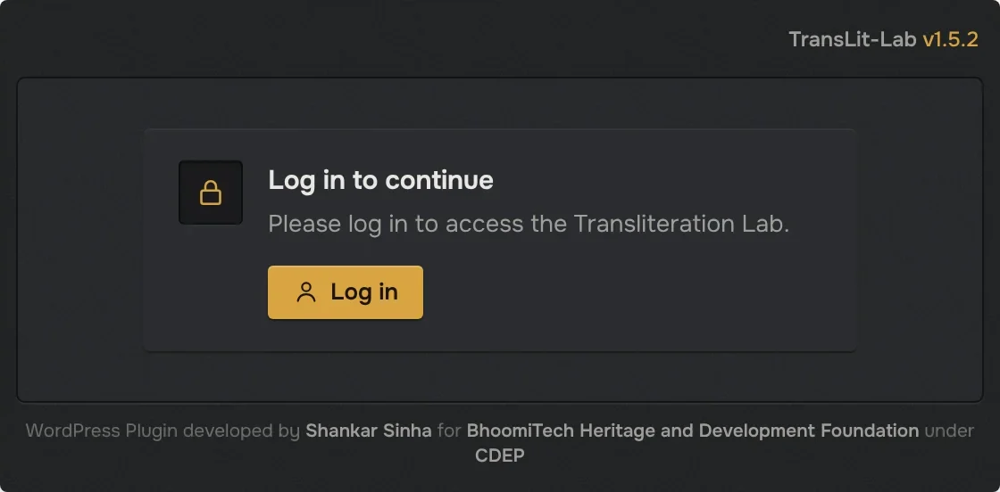
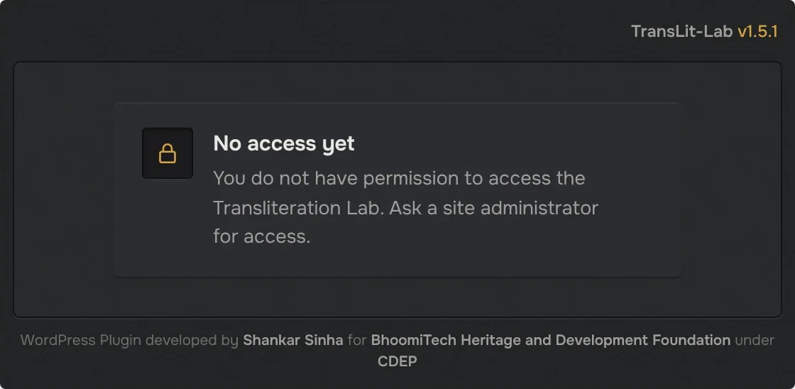
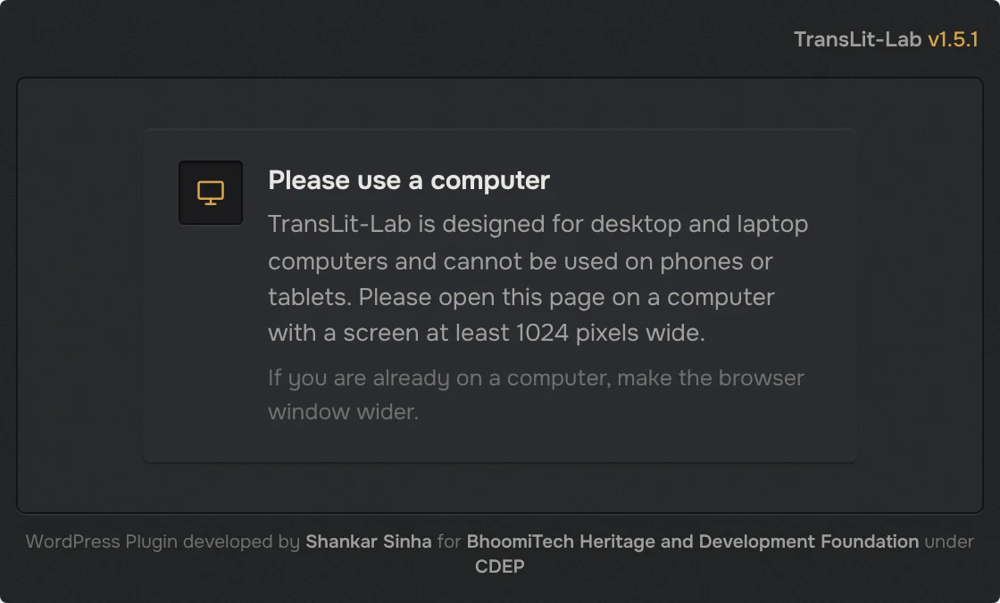
Giving someone access
- Give them the Transliterator role. In Users, open the person (or Add New User), set Role to Transliterator and click Update User. The lab never assigns or removes this role itself; it is managed like any other site role.
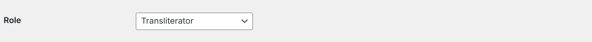
The Role field on the user’s profile. - Approve their lab access. Open Settings → TranslitLab. Under Transliterator Access & Tabs every user with the role is listed. Tick Lab access for them.
- Choose their tabs (or leave the defaults), then click Save All Settings at the bottom of the form.
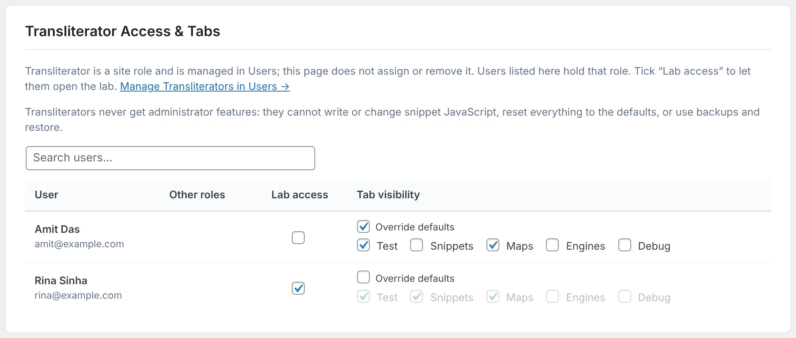
Choosing tabs
Default Tab Visibility sets the tabs every Transliterator gets: any of Test, Snippets, Maps, Engines and Debug. To give one person a different set, tick Override defaults in their row and choose their tabs there; untick it to put them back on the defaults.
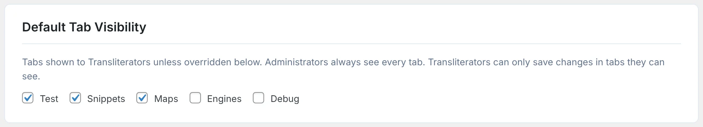
- Tabs are enforced on the server: a person can only save changes in tabs they have, however they try.
- An override with no tabs ticked means no tabs at all (they see No tabs enabled), not the defaults.
- Administrators always see every tab, whatever is ticked here.
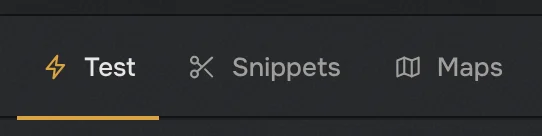
What only administrators can do
Some features are kept to administrators because they reach beyond one person’s work:
| Feature | Transliterator | Administrator | Why |
|---|---|---|---|
| Write or change a snippet’s JavaScript, or import snippets with new JavaScript | No | Yes | Snippet JavaScript runs in the browser of everyone who opens the lab, including administrators. |
| Reset defaults | No | Yes | It replaces everyone’s maps, snippets and settings. |
| Backups, restore, revision history | No | Yes | Restoring replaces all lab data. |
| The Parity add-on | No | Yes | It runs the engine on the server at scale and builds release files. |
| Everything else in the tabs they have: running tests, editing maps, a snippet’s other fields and PHP rules, engine settings | Yes | Yes |
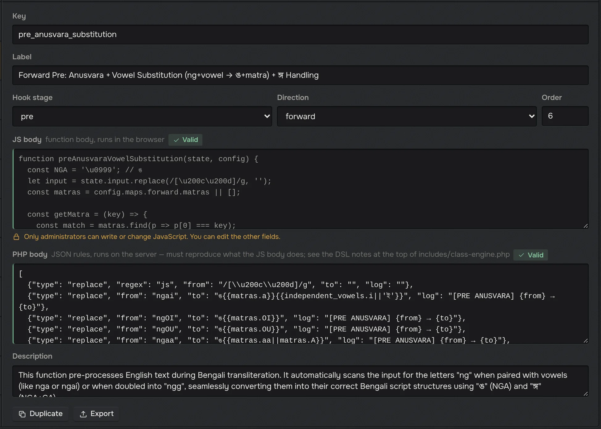
The lab
A tour of the lab
The lab opens on the Test tab. Point at a number or at a part of the picture to see what it is; click to read more.
- Frame header: the plugin name and the installed version.
- Tabs: Test, Snippets, Maps, Engines, Debug.
- Reset defaults (administrators only).
- Active snippets: switch rules on and off.
- Direction: Forward (Roman → BPM) or Reverse (BPM → Roman).
- Run both engines (Ctrl+Enter).
- Input: the text to transliterate.
- JS engine: the browser engine’s output and time.
- PHP engine: the server engine’s output and time.
- Match / Differs: whether the two outputs agree.
- Logs: every step each engine took.
- Map viewer: look up and edit map entries.
- Credit line.
The five tabs
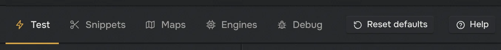
| Tab | What it is for |
|---|---|
| Test | Run text through both engines and compare; switch snippets on and off; look up and edit map entries. |
| Snippets | Create, edit, import and export the processing rules. |
| Maps | See a whole map by section, change the order of entries, import and export maps. |
| Engines | The settings of each engine, and the engines’ source code. |
| Debug | A full record of the last run of each engine, to export and share. |
How saving works
There is no general Save button. Each change is saved to the database when you confirm it: switching a snippet on or off, Save snippet, Apply in a map dialog, Save order, an import, Save JS settings. A short message at the bottom of the lab confirms each save. Before every change, the previous state is kept as a revision.
Reset defaults
Reset defaults, at the right of the tab bar, puts the maps, snippets and engine settings back to those shipped with the plugin. You are asked to confirm, and the current state is saved as a revision first, so it can be restored from Settings → TranslitLab. Only administrators see this button.
Keyboard
| Keys | What they do |
|---|---|
| Ctrl+Enter (⌘+Enter on a Mac) | Run both engines. |
| Tab, then Enter or Space | Reach and open map entries in the Test tab, the import drop zones and the reorder arrows. |
| Esc | Close the dialog that is open. |
The lab
Test: run both engines
The Test tab is where you check what the engine does with real text. Both engines get exactly the same input, maps, snippets and settings, so if their outputs differ, one of them has a gap.
Running a test
- Choose the direction. Forward (Roman → BPM) or Reverse (BPM → Roman).
- Type or paste the input. A word, a sentence, or several paragraphs.
- Click Run or press Ctrl+Enter. The JS engine runs in your browser and the PHP engine on the server, at the same time.
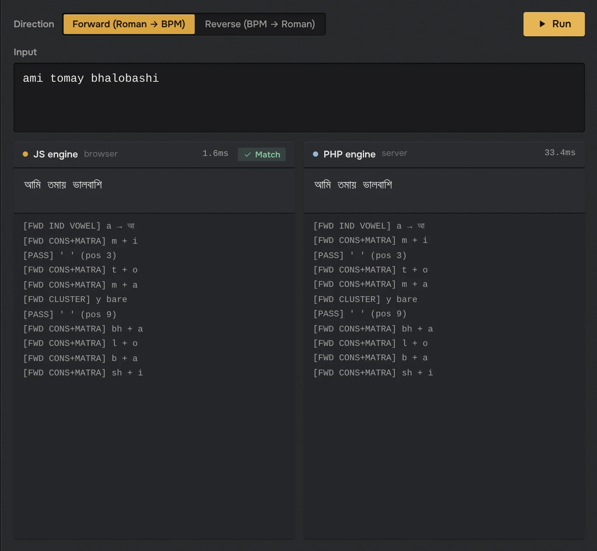
Reading the result
- Each engine’s box shows its output and how long it took (the PHP time includes the trip to the server).
- Match means the two outputs are character for character the same, including invisible joiners. Differs means they are not: one engine is missing something. See Keeping the engines in step.
- Look closely at the output itself, too: a match only says the two engines agree, not that the result is right. Deciding what is right is the team’s work in the Maps and Snippets tabs.
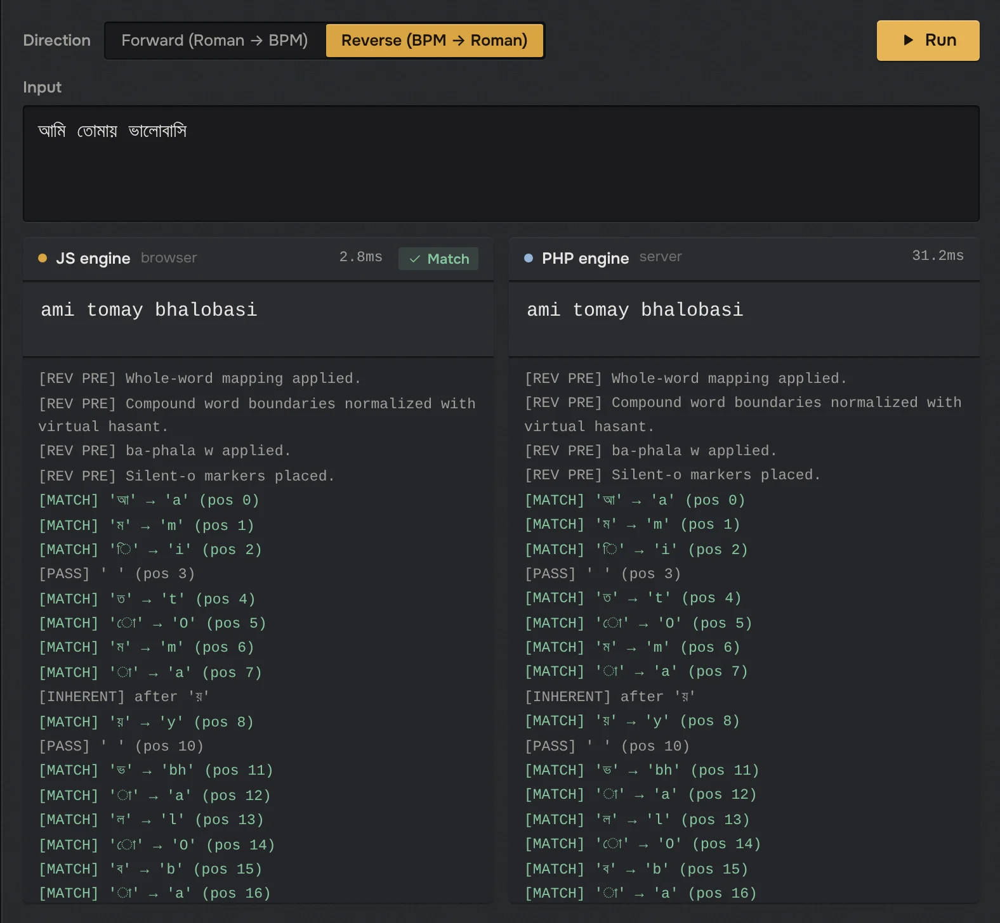
The logs
Under each output is the engine’s log: one line for every step, in order. Comparing the two logs line by line is the quickest way to find where a difference starts. Common markers:
| Log line | Meaning |
|---|---|
[FWD IND VOWEL] a → অ | Forward step 1: a vowel at the start of a word, written in its independent form. |
[FWD CONS+MATRA] m + i | Forward step 3: a consonant with a vowel sign. |
[FWD CLUSTER] y bare | Forward step 4: a consonant without a following vowel (joined with hasanta when the next letter is a consonant). |
[PASS] ' ' (pos 3) | A character not in the map, copied through unchanged (here, a space at position 3). |
[MATCH] 'আ' → 'a' (pos 0) | Reverse: a BPM character found in the reverse map. |
[REV PRE] …, [PRE ANUSVARA] … | A snippet at work; the label comes from the snippet. |
[PARITY] … | Advice from the PHP engine, for example that an active snippet has no PHP rules. Not a step; fix the snippet. |
The Debug tab keeps the full record of the last run, with the snippets and settings used, for exporting.
Switching snippets on and off
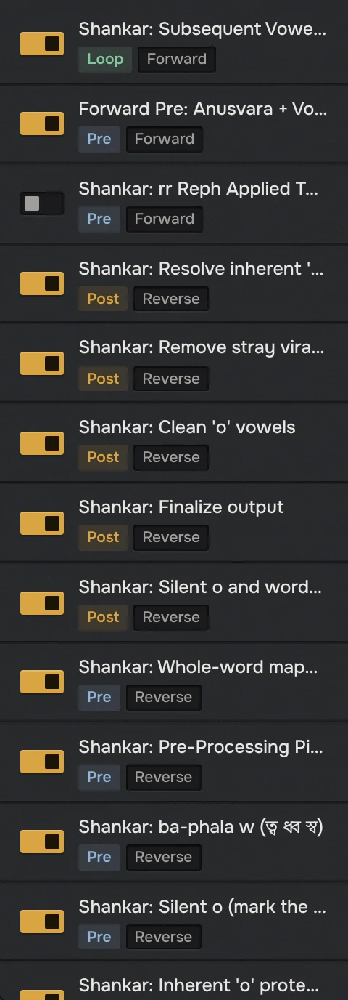
The left column lists every snippet, with its stage (Pre, Loop, Post) and direction. The count at the top, such as 12/13, is how many are switched on.
Click a switch to turn a snippet on or off. The change is saved at once and applies to the next run, in both engines. This is the quickest way to see what a rule does: run, switch it off, run again, compare.
A switched-off snippet is kept with all its content; it simply isn’t used.
The map viewer
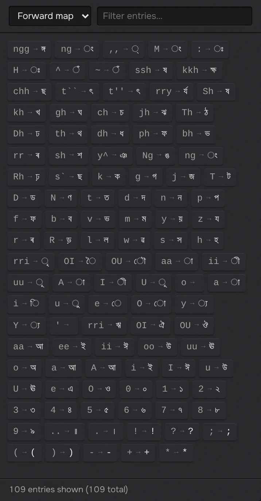
- Choose Forward map or Reverse map in Select a map. Every entry appears as key → character; the count is shown at the bottom.
- Type in Filter entries… to find entries:
khshows every key or value containing kh. - Click an entry to edit it, or Add to make a new one.
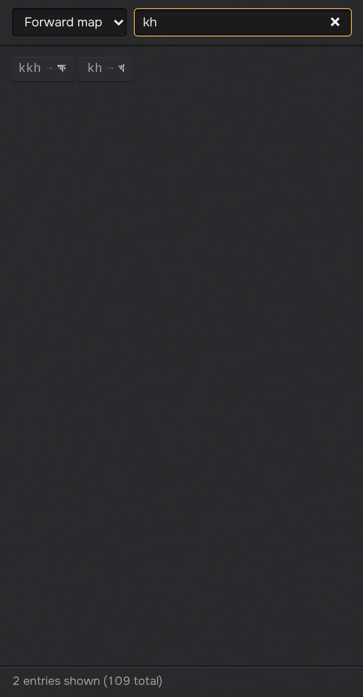
Editing an entry
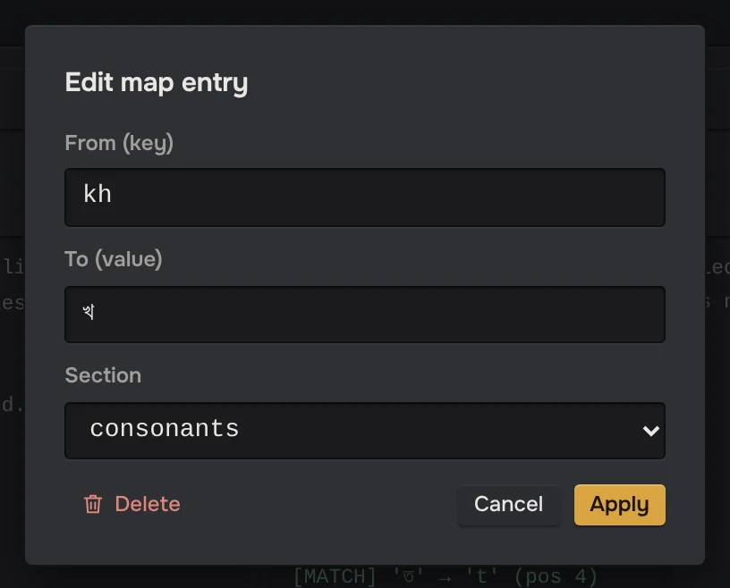
From (key) is what is matched in the input and To (value) what it becomes. Section says which part of the map it belongs to, which matters to the engine (a consonant behaves differently from a vowel sign).
- Apply saves the entry to the map straight away.
- Delete asks you to confirm, then removes it.
- Cancel or Esc closes without a change.
Both fields are required. To change what a key gives, edit its entry rather than adding a second one with the same key: duplicates are resolved differently in different steps (see Duplicate keys).
The lab
Snippets: processing rules
A map can say that kh is খ. It can’t say “drop the inherent o at the end of this kind of word” or “treat ng before a vowel differently”. Snippets do that: small rules that run at a chosen moment in the engine’s work, each written once for the browser engine and once for the server engine.
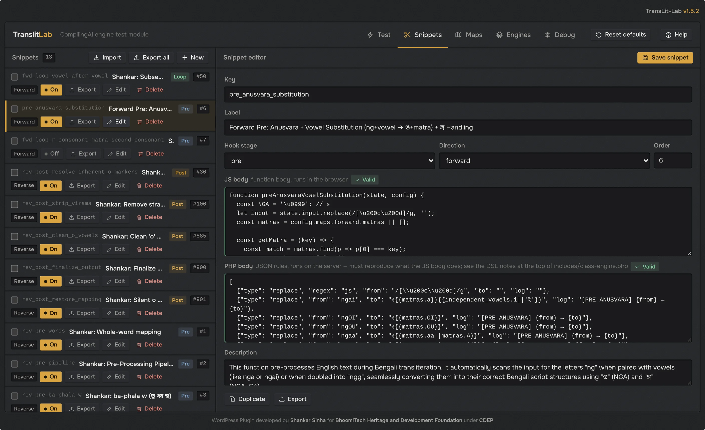
The snippet list
Each row shows the snippet’s key and label, its order number (#6), its stage and direction, and buttons: On/Off, Export, Edit and Delete. Above the list are Import, Export all and New.
Tick the boxes beside several snippets to export just those: a bar shows how many are selected, with Export selected and Clear.
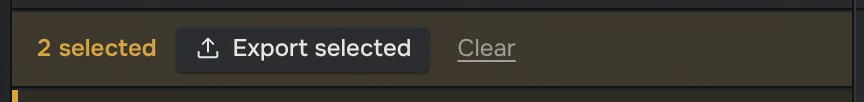
The editor
Click Edit on a row (or New). Change the fields, then click Save snippet at the top right.
| Field | What it means |
|---|---|
| Key | A unique name, such as rev_pre_silent_o. Imports use it to recognise a snippet that already exists. |
| Label | The readable name shown in the lists. |
| Hook stage | pre: works on the whole input before the map lookup. loop: is asked at every position of the input, before the normal map match. post: works on the whole output at the end. See How the engine works. |
| Direction | forward, reverse or both. |
| Order | The order within a stage, smallest first. Two snippets can’t share a number; the lab corrects clashes and tells you. |
| JS body | A JavaScript function, run by the browser engine. Administrators only. |
| PHP body | JSON rules, run by the server engine. They must do exactly what the JS body does. |
| Description | What the rule is for, in plain words, for the next person. |
Both bodies are checked as you type: a green Valid badge, or an error under the box. A snippet whose JavaScript doesn’t compile, or whose PHP body isn’t valid JSON, can’t be saved. Duplicate makes a copy to experiment with; Export saves this one snippet as a .json file.
The JS body
A function that receives the engine’s state (input, the output so far, the position pos, the log) and config (the settings and both maps, under config.maps.forward and config.maps.reverse), and returns the state. Read map values from config.maps rather than typing characters into the code, so the snippet follows later map edits.
function preAnusvaraVowelSubstitution(state, config) {
const NGA = 'ঙ'; // ঙ
let input = state.input.replace(/[]/g, '');
const matras = config.maps.forward.matras || [];
…
}
The PHP body
PHP can’t run JavaScript, so the server engine follows a list of rules written as JSON instead. The most common rule is a replacement:
[
{"type": "replace", "regex": "js", "from": "/[\\u200c\\u200d]/g", "to": "", "log": ""},
{"type": "replace", "from": "ngai", "to": "ঙ{{matras.a}}{{independent_vowels.i||'ই'}}",
"log": "[PRE ANUSVARA] {from} → {to}"}
]
"regex": "js"lets you copy a JavaScript regular expression from the JS body unchanged; the engine makes it behave as it does in the browser.{{matras.a}}is filled in from the map when the rule runs, so the rule follows map edits like its JS twin.{{a||b}}takes the first that exists,{{a||'ই'}}falls back to a literal.- Loop-stage rules use
"type": "consume"with conditions such ascontext_prev_was_consonant. - Other rule types:
lowercase,uppercase,trim,log, andconfigto change an engine setting for one run.
The complete rule reference is the comment at the top of the PHP engine, which you can read in the Engines tab.
[PARITY] line in the PHP log and a warning in the Parity add-on.Importing and exporting
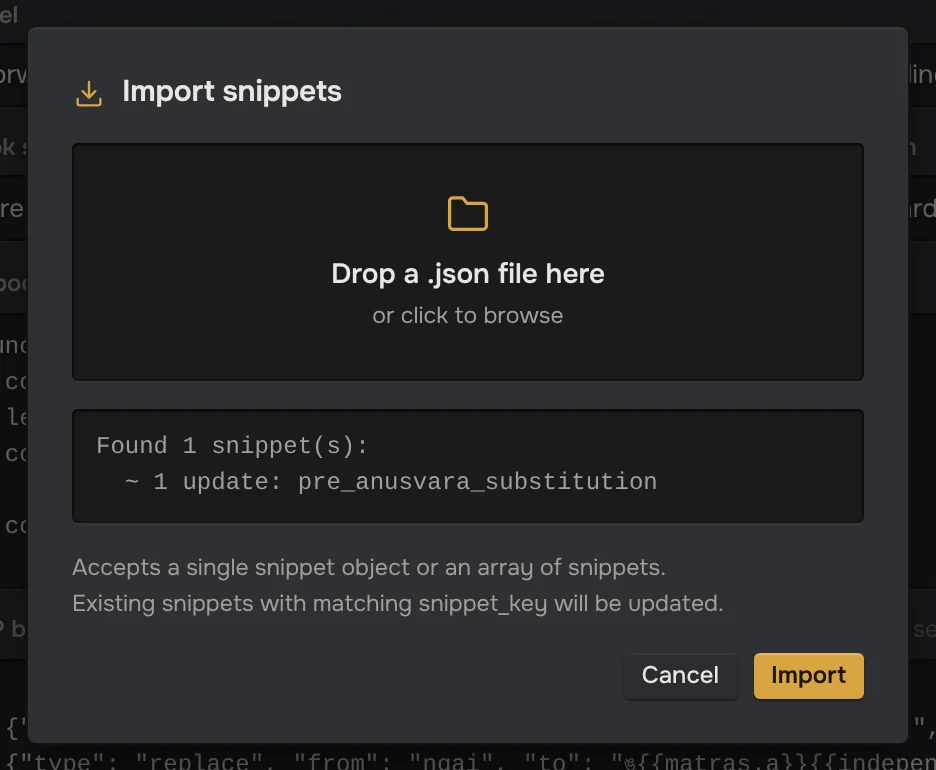
- Click Import, then drop a
.jsonfile on the box or click it to choose one. - The preview says how many snippets are new and which will update existing ones. A snippet whose Key already exists is updated, not duplicated.
- Click Import.
A file may hold one snippet or a list of them, as made by Export, Export selected or Export all. A Transliterator can import snippets only if their JavaScript is already in the lab; new JavaScript must come from an administrator.
Administrators can review every snippet whose JavaScript differs from what shipped with the plugin under Custom Snippet JavaScript in Settings.
The lab
Maps: the lexicon
The maps are the heart of the scheme: the forward map says which Roman keys give which BPM characters, the reverse map the other way. The Maps tab shows a whole map at once, section by section, with its JSON beside it.
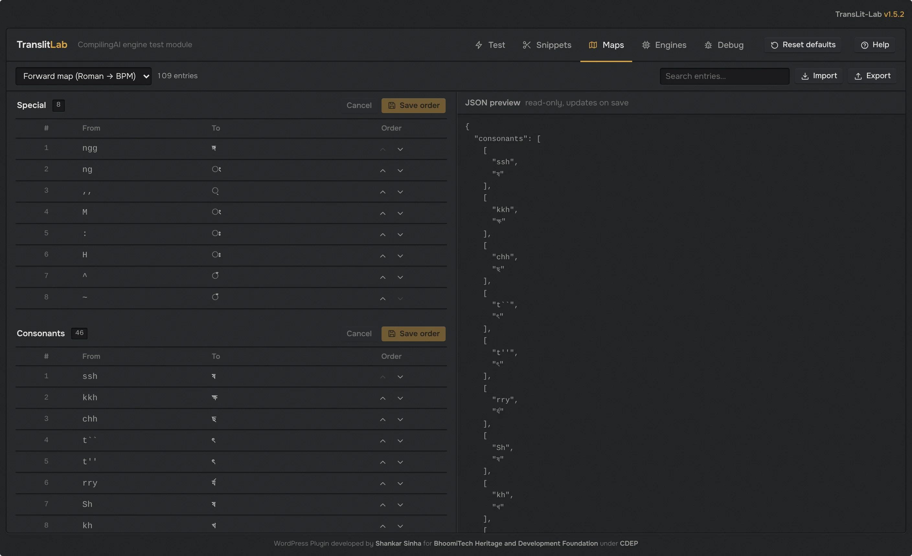
Sections
| Section | Holds |
|---|---|
consonants | Consonants and conjunct shortcuts, such as kh → খ, kkh → ক্ষ. |
matras | Vowel signs used after a consonant, such as i → ি. |
independent_vowels | Vowels in their full form, used at the start of a word or after another vowel, such as i → ই. |
digits | 0–9 → ০–৯. |
punctuation | Full stop to । and similar. |
special | Signs such as anusvara, visarga, chandrabindu and hasanta. |
The same key can appear in two sections with different results: i is ি after a consonant and ই at the start of a word. The engine knows which section to use from the context.
Order matters
Within a section, entries are tried in order and longer keys should come before shorter ones that they begin with: kkh before kh before k. Otherwise the shorter key can win and kh becomes ক + হ.
- Choose the map in the drop-down at the top left (Forward map (Roman → BPM) or Reverse map (BPM → Roman)). Search entries… narrows every section.
- Move entries with the up and down arrows in the Order column. Moved rows are highlighted and the section shows Unsaved.
- Click Save order in that section’s heading, or Cancel to put it back.
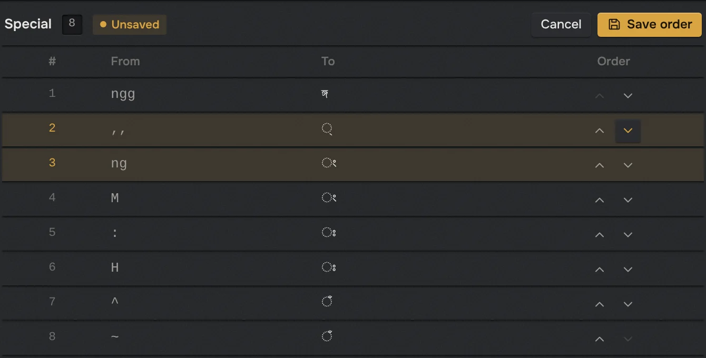
If someone else saved the same map in the meantime, the lab reloads the map and asks you to redo the move rather than overwrite their work.
To add, change or delete entries, use the map viewer in the Test tab.
Importing and exporting a map
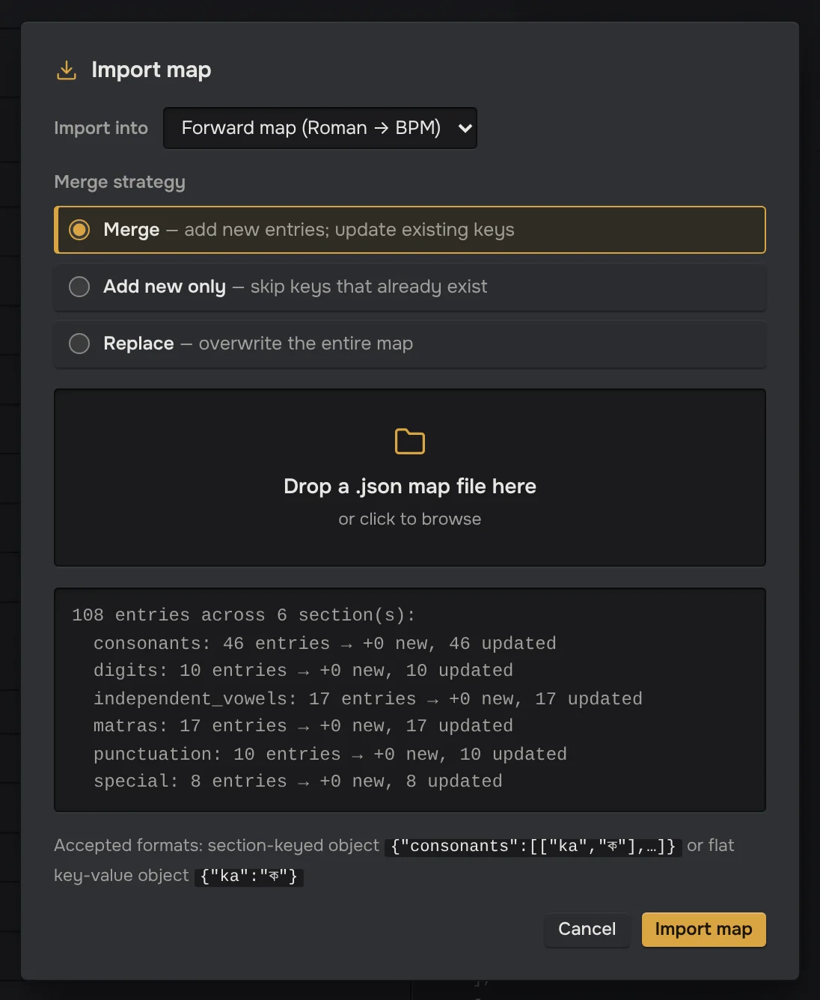
Export downloads the chosen map as a .json file: the proper format for importing it again, here or on another site.
- Click Import and choose the map to import into.
- Choose how: Merge adds new entries and updates existing keys; Add new only skips keys that already exist; Replace overwrites the entire map.
- Drop the file. The preview counts entries per section, new and updated.
- Click Import map.
Files may be section-keyed ({"consonants": [["ka","ক"], …]}) or a flat list ({"ka": "ক"}).
The forward map at a glance
Drawn from the forward package used by the try box, so it shows the map that package was built from.
Loading…
The lab
Engines: settings and source
Each engine has its own copy of a few settings. They are stored separately, so they can be set differently on purpose; normally they should be identical.
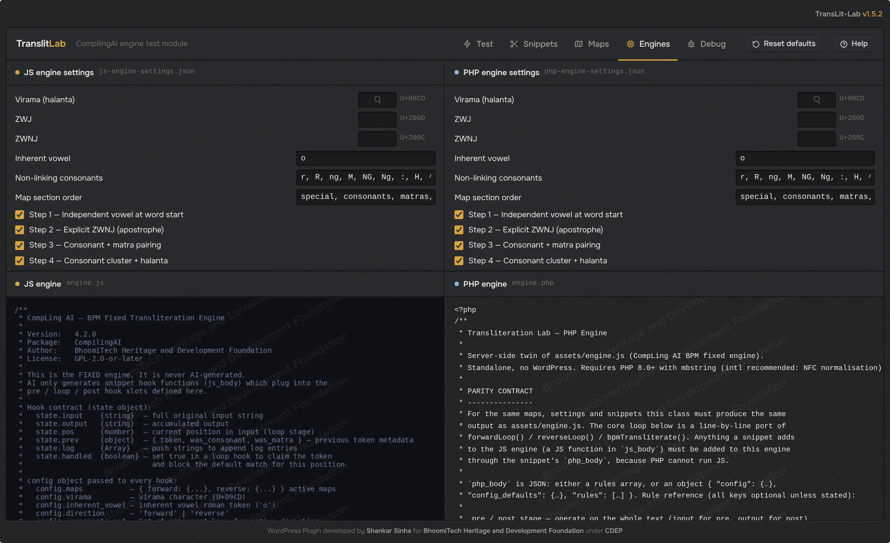
The settings
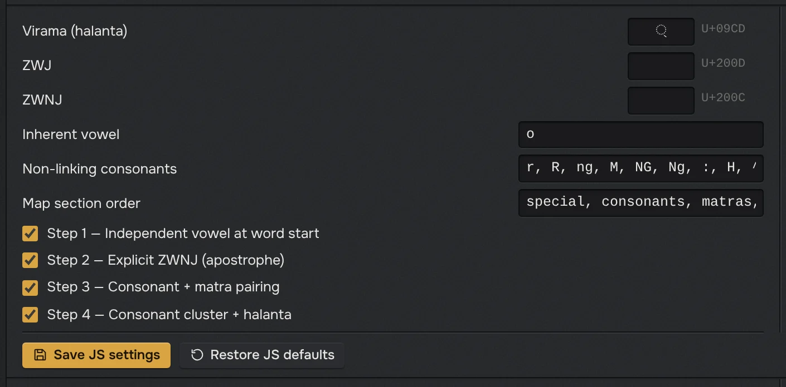
| Virama (halanta) | The joining sign, U+09CD. Its code is shown beside the box. |
| ZWJ, ZWNJ | The zero-width joiner and non-joiner (U+200D, U+200C). |
| Inherent vowel | The vowel a consonant carries when no sign follows: o. |
| Non-linking consonants | Keys that never join the next consonant with a hasanta, comma-separated. |
| Map section order | The order in which sections are searched. |
The four Step switches turn the engine’s built-in forward steps on or off; see How the engine works.
- Save JS settings / Save PHP settings save that engine’s column.
- Restore JS defaults / Restore PHP defaults put that column back to the shipped values (a revision is kept).
The engine source
Below the settings, the JS engine (engine.js) and the PHP engine (engine.php) are shown read-only, for reference. The comment at the top of the PHP engine is the full reference for writing PHP bodies. The engines themselves are part of the plugin and can’t be changed from the lab; everything you can change lives in the maps, snippets and settings.
The lab
Debug: the last run
The Debug tab keeps a complete record of the last test of each engine: when it ran, what went in and out, which snippets were active and every log line. Use it to study a problem, or to send someone everything they need to reproduce it.
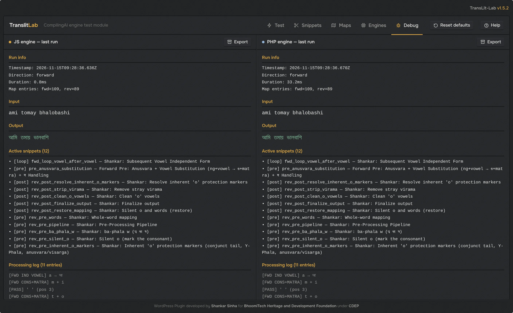
- Run info: the time, direction, duration and map size.
- Input and Output.
- Active snippets: which rules were switched on, in the order they ran.
- Processing log: every step, as in the Test tab.
Run something in the Test tab first; until then the tab says so. The record is kept in the page: reloading the page clears it.
Exporting a run
Export above each column downloads a ZIP file, named after the engine and the time, with:
JSE Debug 2026-11-15 …zip debug_report.md the run, in readable form active_snippets.json the snippets that were on …settings.json that engine’s settings …map.json the map for that direction engine.js / engine.php the engine source
That is enough for another developer to reproduce the run exactly, without access to your site.
Understanding the engine
How the engine works
Knowing the order in which the engine does things makes it much easier to decide whether a change belongs in the map, in a snippet, or in a setting.
The order of work
- Pre snippets run on the whole input, in order: rewriting whole words, marking where a silent o goes, removing stray joiners.
- The loop walks through the input from left to right. At each position:
- active loop snippets get the first chance to claim the text there;
- otherwise, forward, the built-in steps apply: (1) a vowel at the start of a word becomes its independent form; (2) an apostrophe forces a non-joiner (ZWNJ); (3) a consonant followed by a vowel takes the vowel sign; (4) consonants meeting without a vowel join with a hasanta;
- otherwise the longest matching key in the map, searched in the Map section order;
- anything unmatched is copied through (
[PASS]).
- Post snippets run on the whole output: clean-up, resolving markers, final touches.
Within each stage snippets run by their Order number, with those for direction both first. Each of the four built-in steps can be switched off in the Engines tab, for example to let a snippet take over that job.
Map, snippet or setting?
| You want to… | Change |
|---|---|
| Make a key give a different character | The map entry |
| Add a new spelling for a sound | A new map entry, in the right section and order |
| Treat a sequence differently in certain contexts | A loop snippet |
| Handle a whole word or an exception list | A pre snippet (forward) or a pre/post snippet (reverse) |
| Tidy up the result | A post snippet |
| Change the joining sign or the inherent vowel | The engine settings, in both columns |
Keeping the engines in step
The PHP engine is a line-by-line port of the JS engine, so with the same maps, settings and snippets they give the same output. Three things are yours to keep in step:
- The engine settings: the two columns in the Engines tab.
- Every active snippet’s two bodies: the PHP rules must do what the JavaScript does.
- Snippets present on one side only: the PHP log shows a
[PARITY]line.
The Test tab checks one input at a time. The Parity add-on checks thousands.
One known difference is deliberate: for emoji and other characters beyond the basic plane, JavaScript counts two positions and PHP one, so the [PASS] lines show different positions. The output is the same.
Duplicate keys
If the same key appears twice in one section, the built-in consonant steps use the last entry and the longest-match lookup uses the first. With the default settings the built-in steps decide, but the result is easy to misread. To change a mapping, edit the entry; don’t add a second one.
Administration
The settings page
Settings → TranslitLab in the dashboard is for administrators. The upper part is one form, saved with Save All Settings; backups, revisions and the JavaScript review below it act straight away.
Frontend Shortcode
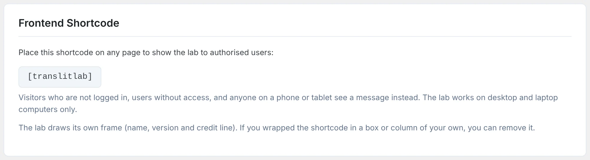
A reminder of the shortcode and who sees what. See Putting the lab on a page.
Interface
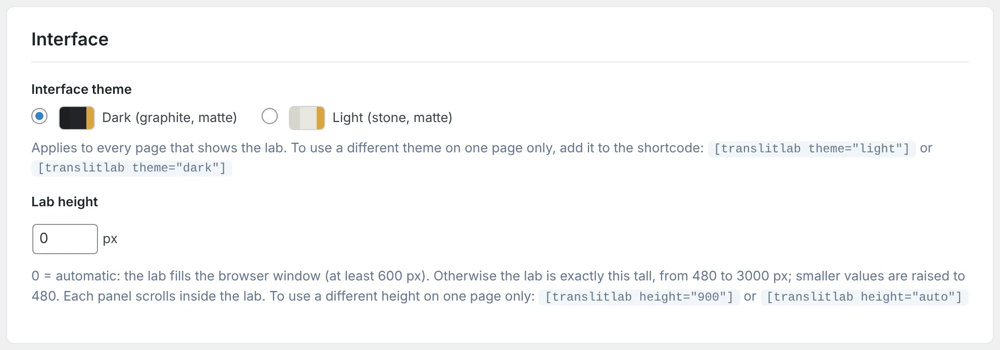
- Interface theme: Dark (graphite, matte), the default, or Light (stone, matte), for every page that shows the lab. A shortcode can choose otherwise for its own page.
- Lab height:
0makes the lab fill the browser window (at least 600 pixels). Any other value fixes its height in pixels, from 480 to 3000; smaller values are raised to 480. Each panel scrolls inside the lab.
Default Tab Visibility, and Transliterator Access & Tabs
Covered in People and access.
When the plugin is deleted
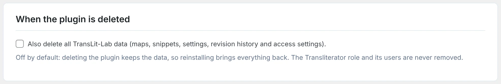
Off by default: deleting the plugin keeps all its data, so reinstalling brings everything back. Tick it only if you want deleting the plugin to remove the maps, snippets, settings, revision history and access settings too; download a full backup first. The Transliterator role and its users are never removed.
Custom Snippet JavaScript
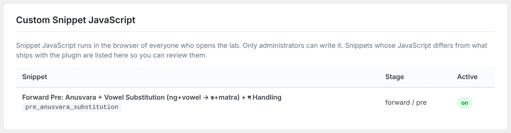
Every snippet whose JavaScript differs from what shipped with the plugin is listed, with its stage and whether it is active, so you can review all code that runs in the lab users’ browsers. When everything matches the shipped defaults, it says so.
Administration
Revisions and backups
Nothing done in the lab is lost: the state before every change is kept with the name of whoever made it, and a full backup can be downloaded at any time. Both are in Settings → TranslitLab, for administrators.
Revision History
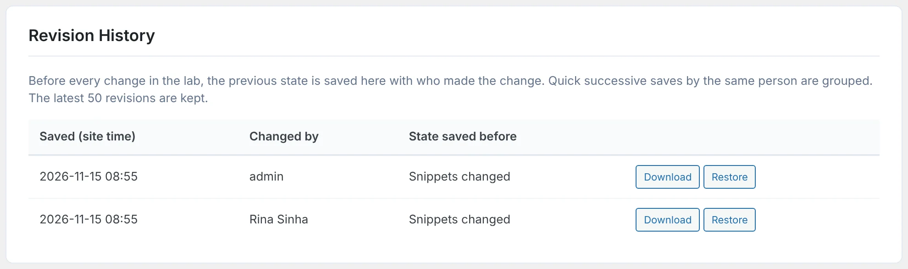
- Each row is the state before a change: when it was saved, who changed it, and what changed (Snippets changed, a map, settings…).
- Several quick saves by the same person within ten minutes are grouped into one revision, so a working session doesn’t fill the list.
- The latest 50 revisions are kept.
- Download saves that revision as a backup file. Restore puts the lab back to it; the current state is saved as a revision first, so a restore can itself be undone.
Full backup and restore
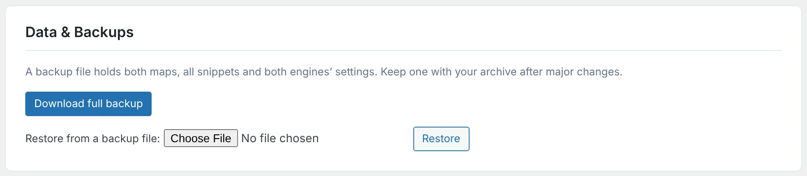
Download full backup saves one .json file with both maps, all snippets and both engines’ settings. Keep one with your archive after major changes, and before updating the plugin.
To restore, choose the file in Restore from a backup file and click Restore. The file is checked first; the current state is kept as a revision.
TransLit-Lab Parity add-on
Parity: the configuration check
The Parity add-on answers one question thoroughly: do the browser engine and the server engine give the same output for everything, not just the words you happened to test? It lives in Tools → TransLit-Lab Parity, for administrators.
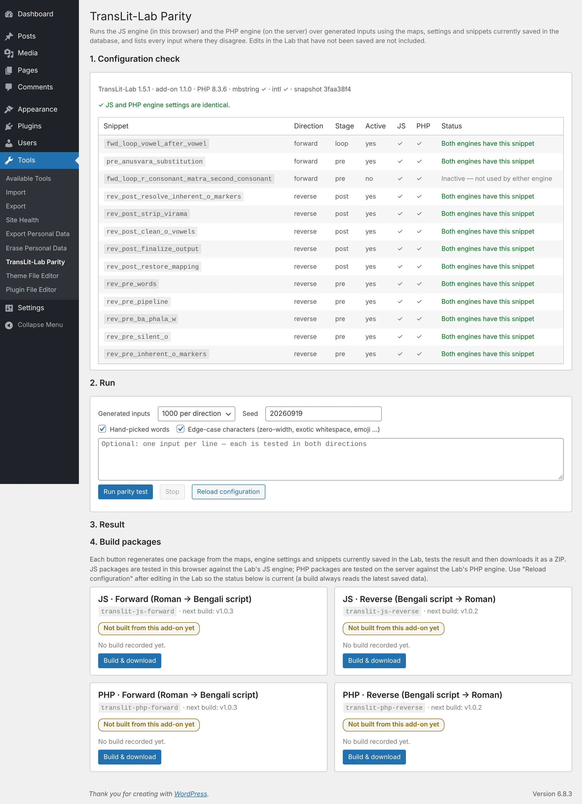
What it tests
The add-on uses the data saved in the lab: maps, engine settings and snippets. Unsaved edits are not included. It never writes to the lab’s data.
1. Configuration check
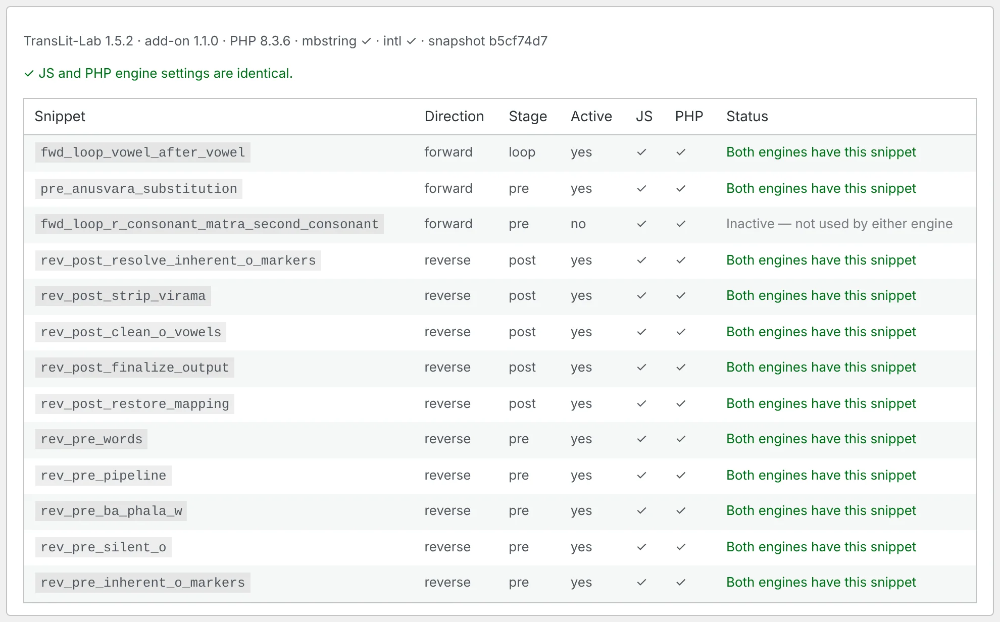
The first line shows the versions of the lab, the add-on and PHP, whether mbstring and intl are available, and a short fingerprint of the saved data. Then:
- Whether the JS and PHP engine settings are identical, and if not, which differ.
- Every snippet, with a status:
| Status | Meaning |
|---|---|
| Both engines have this snippet | It has a JS body that compiles and PHP rules that are valid JSON. |
| Inactive — not used by either engine | Switched off, so it doesn’t matter for parity. |
| JS only — the PHP engine cannot run it | Write its PHP rules. |
| PHP only — the JS engine skips it | Write its JS body. |
| No JS and no PHP body | An empty snippet. |
| JS body does not compile: … | Fix the JavaScript in the lab. |
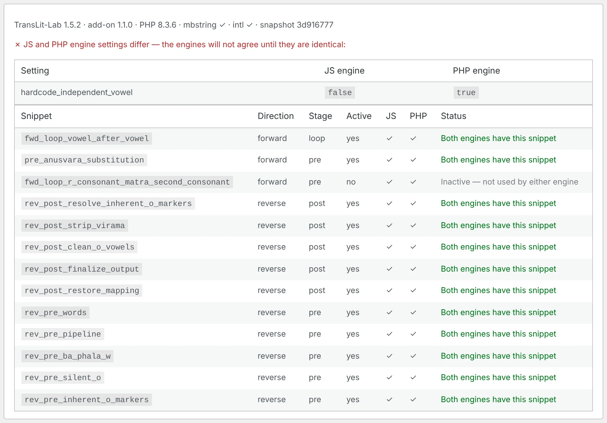
After editing in the lab, click Reload configuration so the check is current.
TransLit-Lab Parity add-on
Parity: running a test
A run sends hundreds or thousands of inputs through both engines, in both directions, and lists every input where the outputs differ.
2. Run
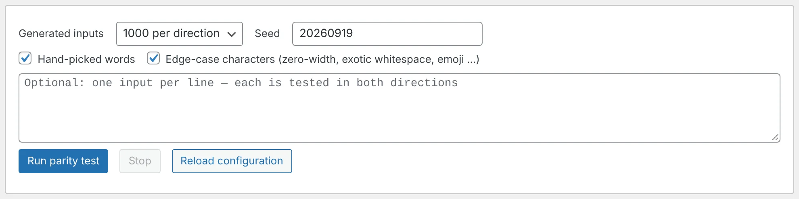
| Option | What it does |
|---|---|
| Generated inputs | How many generated inputs per direction: 250, 500, 1000 (the default), 2500 or 5000. They are built from every key of your current maps. |
| Seed | The same seed gives the same inputs, so a run can be repeated exactly after a fix. Change it to explore new combinations. |
| Hand-picked words | Adds a list of real words chosen to exercise the tricky cases. |
| Edge-case characters | Adds zero-width characters, unusual spaces, emoji and the like. |
| The text box | Your own inputs, one per line; each is tested in both directions. |
Click Run parity test. The JS engine runs in your browser (with the same code as the lab) and the PHP engine on the server, in batches of 200. A progress bar shows how far it has got; Stop ends the run early and shows the results so far.
3. Result
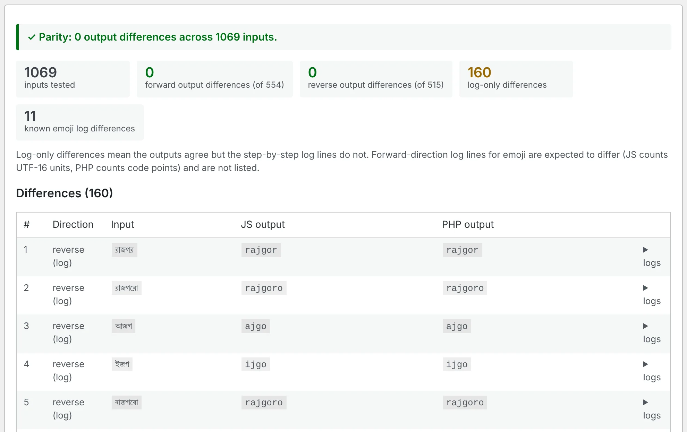
| Count | Meaning |
|---|---|
| inputs tested | All inputs, both directions. |
| forward / reverse output differences | Inputs where the two outputs differ. These are what matter: they should be 0. |
| log-only differences | The outputs agree but the log lines don’t. Usually harmless (a snippet logging in a slightly different way); worth a look if you rely on the logs. |
| known emoji log differences | Expected: position numbers for emoji differ between the engines. Not listed. |
The table below lists each difference: direction, input, JS output and PHP output, with invisible characters shown as ⟨U+200C⟩ and so on. Click logs on a row to see both engines’ logs for that input. The first 100 rows are shown; Show more adds more.
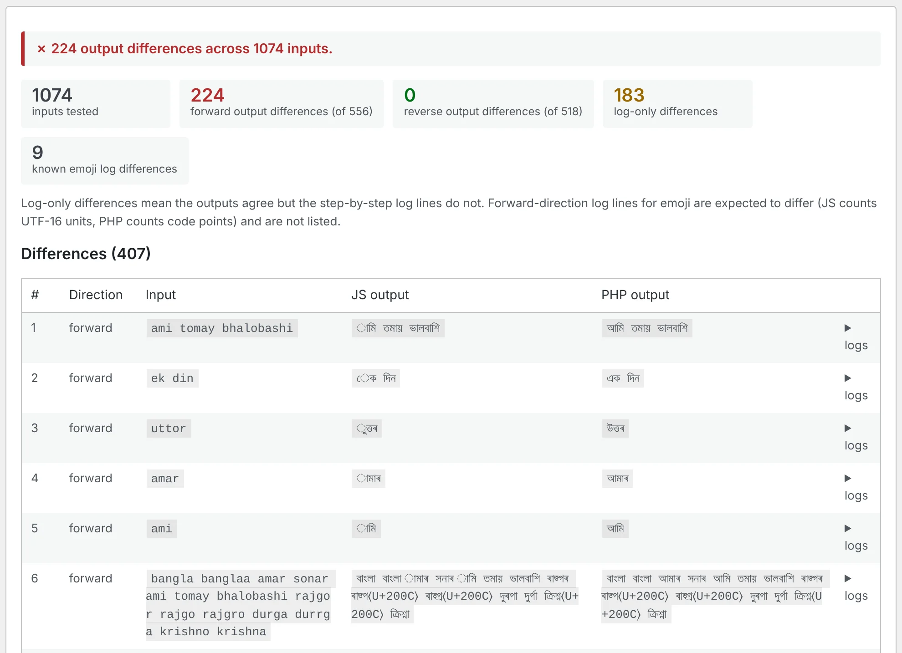
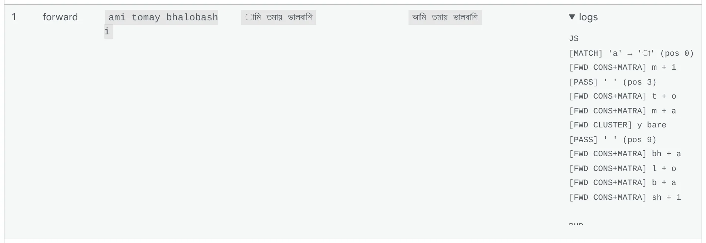
Fixing differences
- Look for a pattern. Are all the differences in one direction? Do they all contain a certain letter or sequence? The configuration check may already name the cause.
- Copy the inputs. Copy differing inputs puts them on the clipboard, one per line.
- Fix it in the lab: make the settings identical, or correct the snippet whose two bodies disagree. Try a few of the inputs in the Test tab until it says Match.
- Re-test. Click Reload configuration, paste the inputs into the box, and run again with the same seed.
Download full report (JSON) saves everything: the settings, the counts and every difference with both logs. Attach it when asking a developer for help.
TransLit-Lab Parity add-on
Building packages
When the lab’s rules are right, you will want to use them elsewhere: in a website, a phone app that works offline, or another WordPress plugin. Build packages turns the saved data into four ready-made libraries, tests each one, and downloads it as a ZIP.
The four packages
| Package | Direction | For |
|---|---|---|
translit-js-forward | Roman → BPM | Web pages, service workers and offline web apps (PWAs), Node. |
translit-js-reverse | BPM → Roman | The same. |
translit-php-forward | Roman → BPM | WordPress plugins and other PHP projects (PHP 8.0+). |
translit-php-reverse | BPM → Roman | The same. |
4. Build packages
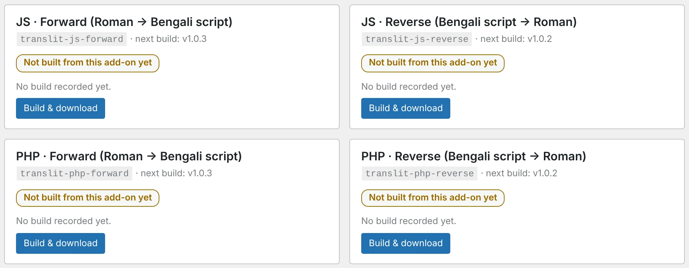
Each card shows the package name, the version the next build will get, and a status:
- Not built from this add-on yet: no build recorded.
- Data changed since the last build: the lab’s maps, settings or snippets have changed; the button is highlighted.
- Up to date: the last build matches the current data.
- Run a parity test first and make sure it shows 0 output differences.
- Click Build & download on a card. The add-on reads the saved data, writes the package, and records test inputs from the lab’s own engine.
- The package tests itself. A JS package is run in your browser against the lab’s JS engine; a PHP package on the server against the lab’s PHP engine. Only if every test input matches is the ZIP downloaded and the build recorded.
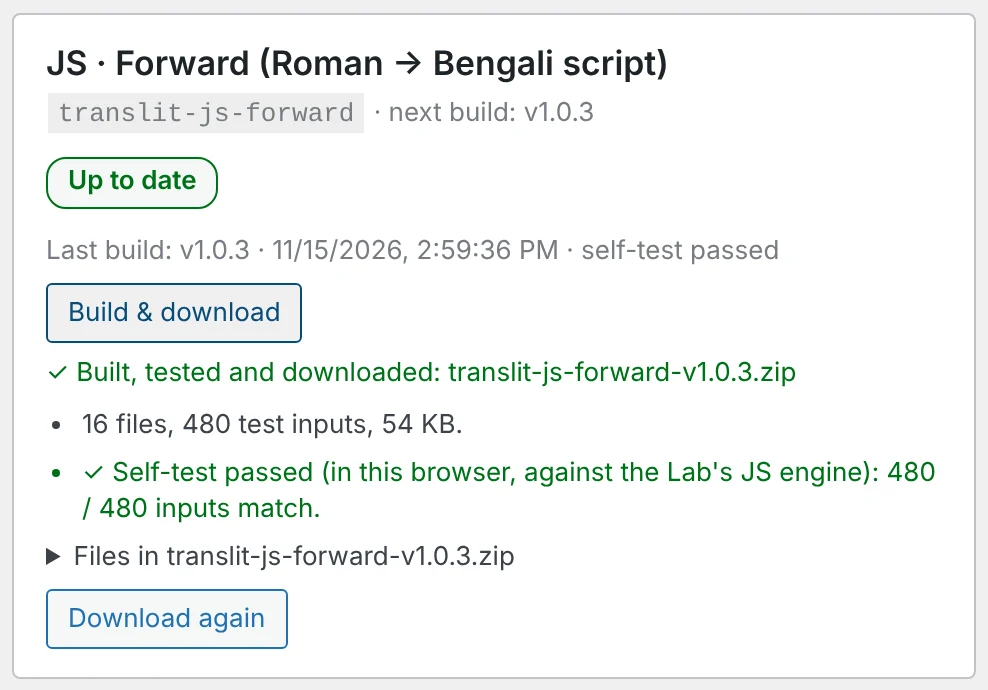
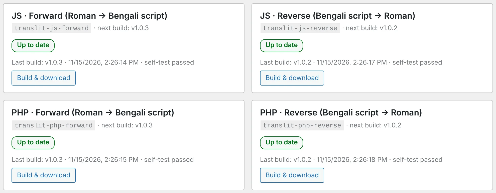
Version numbers
Versions continue from the last shipped packages (forward 1.0.2, reverse 1.0.1) and go up one step each time a package is built from changed data: the first build here gave translit-js-forward 1.0.3 and translit-js-reverse 1.0.2. Building again with unchanged data keeps the number.
Warnings and failures
- An active JS snippet that does not compile stops the JS builds, and is named. Inactive snippets can’t break a build (they are left out of the bundle).
- Data problems the add-on can see are listed under the card, for example an active snippet with no PHP rules, or a switched-off setting saved as an empty string (which both engines read as on).
- Self-test failed: the failing inputs are shown with what was expected and what came out; nothing is downloaded.
- Damaged in transit (size or checksum mismatch): just try again.
No Node.js is needed on the server. The minified .min.js file is not produced by the add-on; run npm install && npm run build in the package if you want one.
TransLit-Lab Parity add-on
Using the packages
Each package carries the maps, settings and active snippets it was built from, so it works with no connection to the lab. Each also has a README with examples computed from your data.
JavaScript packages
translit-js-forward/ dist/translit-forward.js for <script>, importScripts() and require() — global TranslitForward dist/translit-forward.mjs ES module data/ forward-map.json, engine-settings.json, snippets.json src/ scripts/build.js tests/ examples/ README.md LICENSE package.json
In a web page:
<script src="translit-forward.js"></script>
<script>
TranslitForward.transliterate('ami tomay bhalobashi'); // আমি তমায় ভালবাশি
</script>
In an offline web app’s service worker: importScripts('/vendor/translit-forward.js') and add the file to the precache list; it is the only file needed. In Node: require('./dist/translit-forward.js').
| Call | Gives |
|---|---|
transliterate(text) | The output text. |
run(text) | { output, log }, with the step-by-step log. |
create({ map, settings, snippets }) | A separate transliterator with your own data. Make one and reuse it. |
getDefaults() | A copy of the bundled map, settings and snippets. |
version, direction | Which package this is. |
The reverse package is the same with TranslitReverse and translit-reverse.js. The try box in this manual uses exactly these two files.
PHP packages
translit-php-forward/ translit-forward.php require this one file src/Engine.php src/Transliterator.php data/ tests/ examples/basic.php examples/wordpress-plugin-example.php composer.json README.md LICENSE
require_once __DIR__ . '/lib/translit-php-forward/translit-forward.php'; use CompLingAI\Translit\Forward\Transliterator; echo Transliterator::convert( 'ami tomay bhalobashi' ); // আমি তমায় ভালবাশি $t = Transliterator::make(); // build once, reuse $r = $t->run( 'ami tomay bhalobashi' ); // ['output' => …, 'log' => […]]
The reverse package uses the namespace CompLingAI\Translit\Reverse. Both can also be installed with Composer (PSR-4 autoloading).
the_content, and escape the result with esc_html(). examples/wordpress-plugin-example.php shows a shortcode and a filter done properly.Testing a package
Each package includes the test inputs it was checked with: node tests/run.js for a JS package, php tests/run-tests.php for a PHP package. For the packages built for this manual:
| Package | Result |
|---|---|
translit-js-forward 1.0.3 | 3866 checks passed, 0 failed (480 inputs × 2 builds) |
translit-js-reverse 1.0.2 | 3546 checks passed, 0 failed (440 inputs × 2 builds) |
translit-php-forward 1.0.3 | 3375 checks passed, 0 failed (480 inputs) |
translit-php-reverse 1.0.2 | 3095 checks passed, 0 failed (440 inputs) |
Keeping packages up to date
A package is a snapshot. After changing the lab’s data, open Tools → TransLit-Lab Parity: any card that says Data changed since the last build needs building again. Replace the old files in your projects with the new ones.
Help
Troubleshooting and questions
The lab doesn’t fill the width of the window
From version 1.5.1 the lab spans the full window in every theme, including block themes such as Twenty Twenty-Five and themes with a sidebar beside the content. In 1.5.0 it could start at the content margin and be cut off on the right; update the plugin to fix it. If you had added this workaround to your site’s Additional CSS for 1.5.0, you can now remove it:
.tl-frame.tl-frame--wide{margin-left:calc(50% - (100vw - var(--tl-sbw, 0px)) / 2 + 16px) !important;margin-right:0 !important}
If the lab is still out of place, check that nothing else on the page (a page builder’s section, a custom block) wraps the shortcode in a box with a fixed position or hidden overflow; put the shortcode directly in the page.
Someone can’t open the lab
- Log in to continue: they aren’t logged in.
- No access yet: check they have the Transliterator role (Users) and Lab access ticked (Settings → TranslitLab), then Save All Settings.
- No tabs enabled: their override has no tabs ticked, or the default set is empty.
- Please use a computer: the window is narrower than 1024 pixels, or the device is a phone or tablet.
A change won’t save
- A Transliterator can only save in tabs they have, and can’t change snippet JavaScript.
- A snippet with an error under the JS or PHP body can’t be saved until it is fixed.
- In a map dialog, both From and To are required.
- If the message says the list on screen was out of date, someone else saved first: the map has been reloaded, redo your change.
The Test tab says Differs
- Compare the two logs from the top; the first different line points to the cause.
- A
[PARITY]line in the PHP log names a snippet missing its PHP rules. - Check the two settings columns in the Engines tab are identical.
- Run the Parity add-on’s configuration check, which finds both at once.
Something went wrong: how do I go back?
Open Settings → TranslitLab → Revision History, find the revision from before the change (by time and name) and click Restore. See Revisions and backups.
Questions
Will deleting the plugin delete our work?
Not unless Also delete all TransLit-Lab data is ticked in Settings. Deleting the Parity add-on removes only its one record of past builds.
Does the lab load anything from other sites?
No. The typeface and all scripts are bundled with the plugin.
Can a Transliterator use the Parity add-on?
No; it is for administrators. A Transliterator can check single inputs in the Test tab.
Why does the parity result list log-only differences when the output agrees?
Some snippets write their log lines slightly differently in the two engines. The output is what users get, and that matches; log-only differences matter only if you compare logs.
Can we update this manual’s try box after changing the maps?
Yes: build the two JS packages again and copy their dist/translit-forward.js and dist/translit-reverse.js into assets/vendor/translit/ in this manual’s folder.
Help
What’s new
TransLit-Lab 1.5.1
- The lab now spans the full window in every theme. In block themes such as Twenty Twenty-Five it used to start at the content margin and run off the right edge, and in themes with a sidebar beside the content it was shifted sideways. The lab now measures where the theme’s content column starts. See Troubleshooting.
TransLit-Lab 1.5.0
- Interface theme: Dark (graphite) or Light (stone), site-wide or per page with
theme="…". - Lab height: fill the window or a fixed height, site-wide or per page with
height="…". - The lab sits in the BhoomiTech frame, with the name, version and credit line.
- Keyboard use for map entries, drop zones and reorder arrows; Esc closes dialogs.
- New matte look, line icons, tidy notice cards, and the Onest typeface bundled.
- Fixes: the Import map button no longer stays on “Saving…”; snippet names with HTML are shown as text.
TransLit-Lab 1.3.0
- Only administrators can add or change snippet JavaScript; tab permissions enforced on the server.
- Reset, backups and restore for administrators only; revision history and full backup/restore added.
- The Transliterator role treated as a site role; desktop-only message for phones and tablets.
- Deleting the plugin keeps the data unless you opt in; all-or-nothing saves; review of custom snippet JavaScript.
TransLit-Lab Parity 1.1.0
- Build packages: the four JS/PHP, forward/reverse packages from the live data, each self-tested before download, with an up-to-date status.
- Package versions continue from the shipped ones and go up when the data changes.
- Deleting the add-on removes its single option.
TransLit-Lab Parity 1.0.1 and 1.0.0
First release, with the configuration check, runs and results; 1.0.1 fixed a run that failed with “cases must be an array of at most 500 items”.